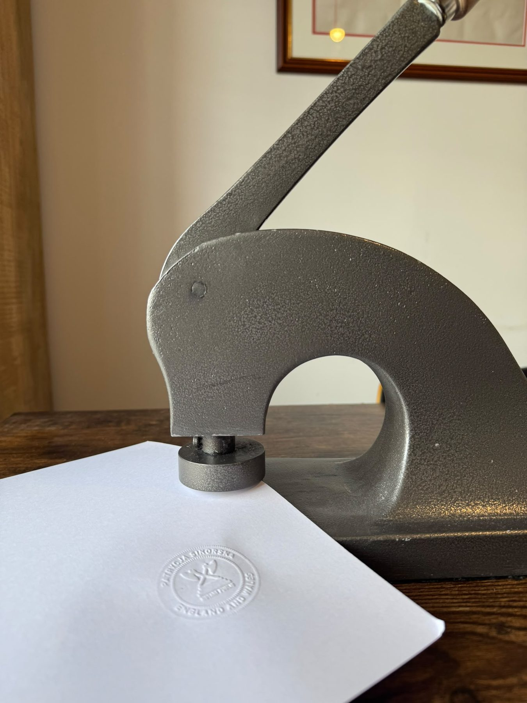

Apostille & legalisation
Apostille & legalisation
Legalisation is the process by which the signature and seal of the notary are authenticated by the Foreign Office and the Consulate of the country in which the document is to be used.
Which route applies
There are two routes, and the destination country decides which
Countries which are part of the Commonwealth most likely do not require notarial acts issued in the United Kingdom to be legalised. However, it is always best to confirm this with the receiving jurisdiction to avoid unnecessary delays.
If the country is party to the Hague Convention
Apostille legalisation
It is sufficient to legalise documents for use in Countries that have accepted the Hague Convention of 5th October 1961 over the legalisation of public documents by way of an Apostille at the Foreign, Commonwealth & Development Office (FCDO).
Apostille is an official certificate that the FCDO will add to the back of some documents before they can be used abroad.
The FCDO offers the options of Premium or Standard services. However, the premium service is only available to registered businesses.
If it is not
Consular / embassy legalisation
Countries which are not party to the Hague Convention of 5th October 1961 over the legalisation of public documents must obtain legalisation of the documents at the Consulate/ Embassy of the relevant country. In some cases, Apostille is still required before the Consular Legalisation is affixed.
This route takes longer and the cost varies by embassy, so the fee is quoted once we know the country.
We will arrange it for you
Sikorska Notary uses specialised agents assisting private individuals and corporate clients with their document attestation and legalisation requirements for use worldwide.
It would be best to send us a copy of any document you need legalised, so we can advise accordingly and provide you with the accurate fee quote. If you are unsure about whether or not you need any documents to be legalised, simply contact us.

Send the document, get a fixed quote
Tell us what the document is, where it is going and when you need it. That is usually enough to quote a fixed fee straight away.